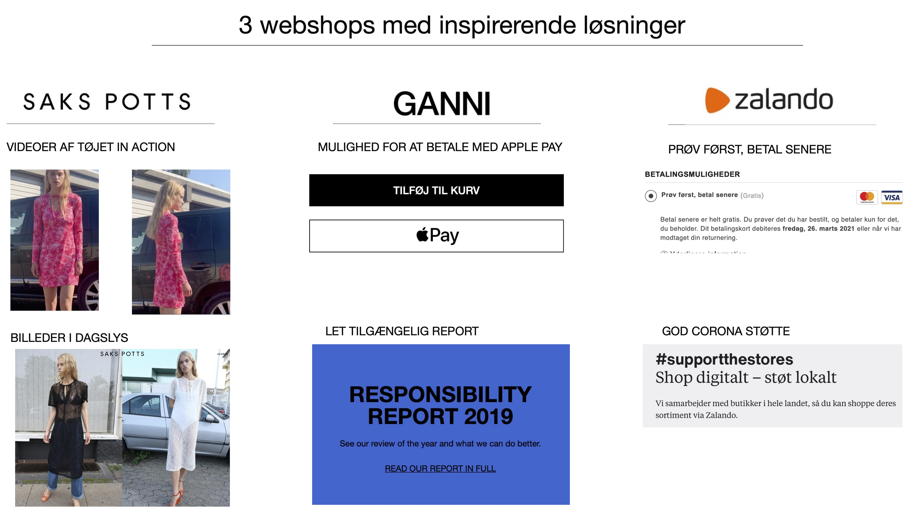
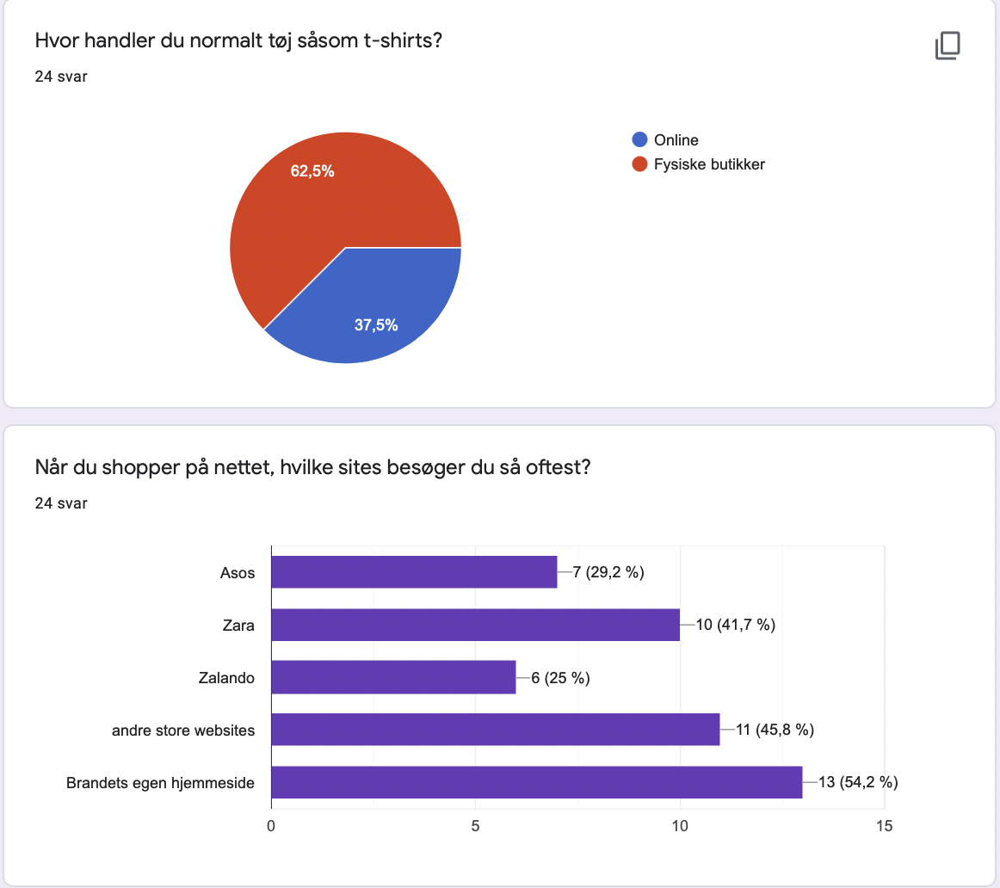
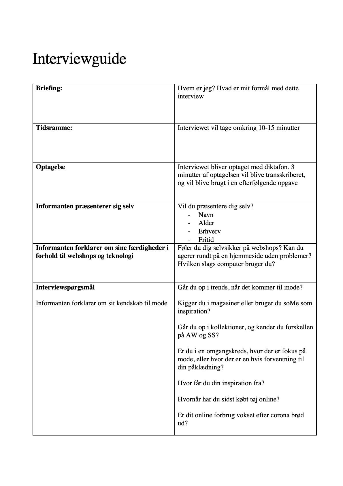
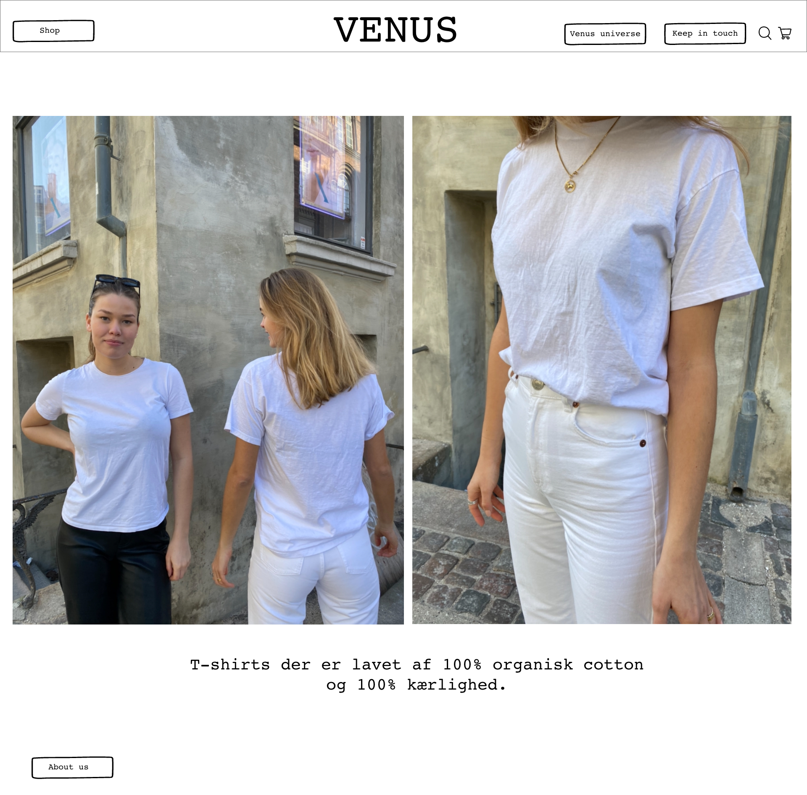

Tema 5
Dette tema var bygget op af tre hovedkategorier: Research, design og pitch. Formålet med dette tema var at opnå erfaring med udvalgte UX-metoder og derefter kunne præsentere det på en slutproduktet for interessenter.
I research delen blev vi introduceret for forskellige research metoder. Metoder som desk research, observations research, survery research og interview research. Disse former for research hjalp os med at indsamle data fra en brugers perspektiv, ikke designerens macefornemmelse. Denne viden er enormt vigtig for den næste proces: Design.
Under design forløbet blev vi introduceret til low-fi og high-fi prototyper, som skulle laves i Adobe XD. Dette hjalp med at give et indtryk af det visuelle udtryk af webshoppen. Her skulle vi også producere vores eget foto content, som skulle efterbehandles i Photoshop.
Til sidst i temaet skulle slutproduktet pitches til resten af gruppen. Her blev hoved-krop-hale metoden taget i brug. Hoved/research: anslag, status og udfordring. Krop/design: løsning, ide og koncept. Hale/test: konklusion og perspektiver.
Research
  Design og prototype
